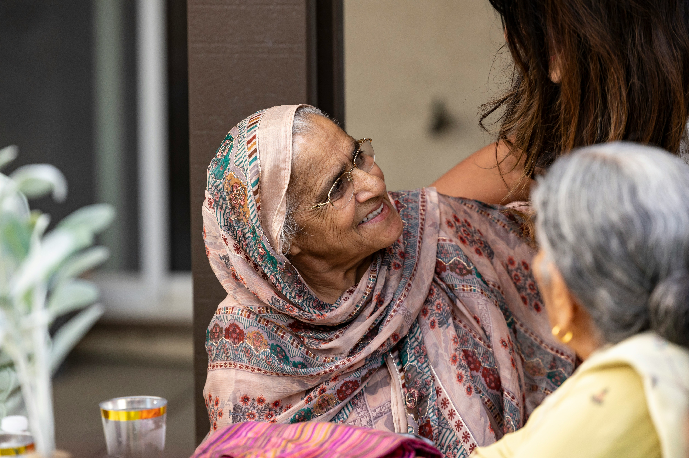
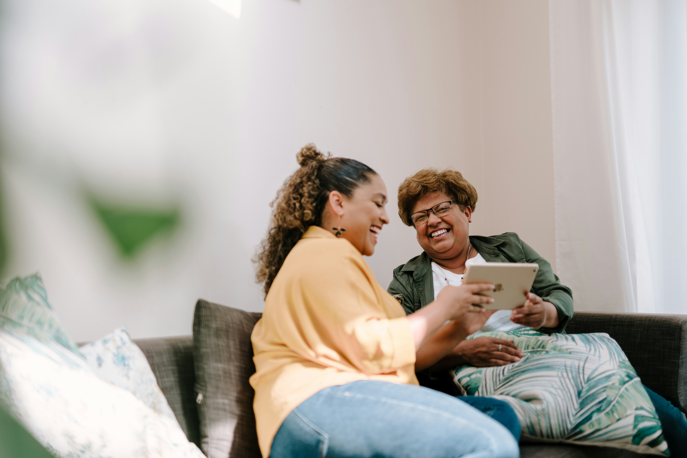

Our Care in Action
See the warm, supportive relationships we build with seniors every day.

Friendly Conversations
Meaningful social interaction and companionship to brighten each day.

Family Peace of Mind
Knowing your loved one has reliable support and companionship.

Safe Outings
Accompanying seniors to appointments, shopping, and community activities.

Wellness Check-Ins
Regular visits to ensure seniors are doing well and have what they need.